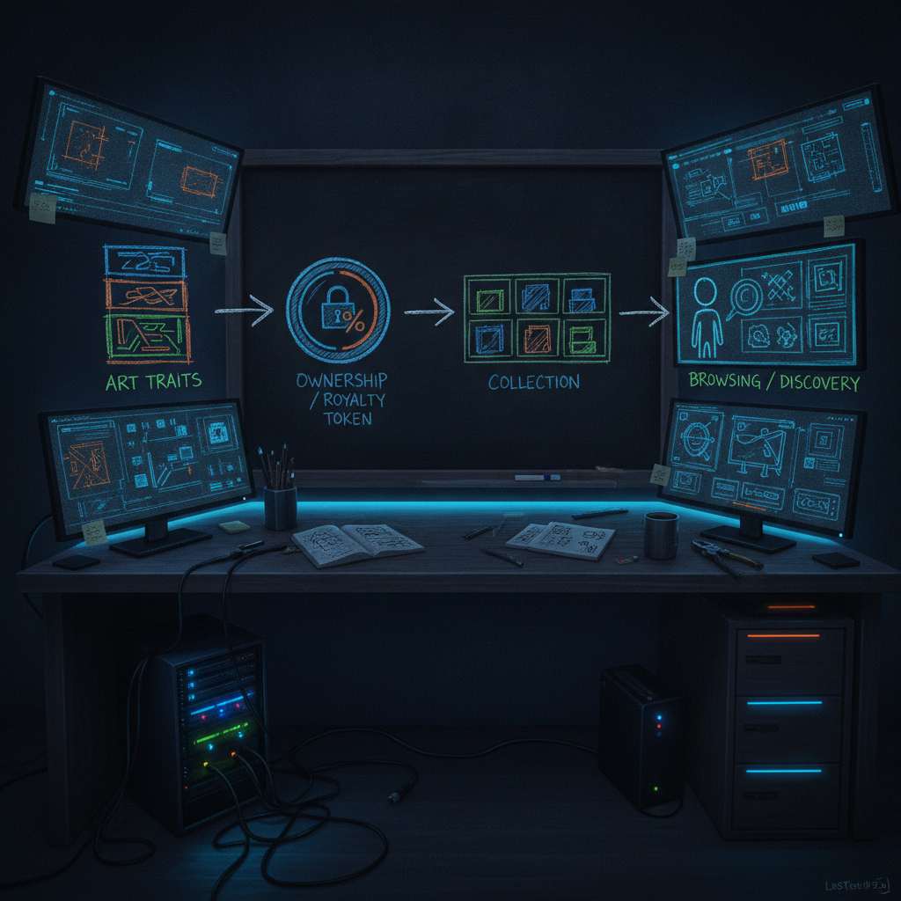

A closer look at God Loves BEPE, a meme NFT collection on Chia
I bookmark a lot of NFT launches and let most of them scroll right back out of my head. This one stuck for a second, not because I think it is the next big thing, but because it is a clean little example of how meme culture keeps landing on Chia specifically. That is the part worth thinking about.
What was bookmarked
Originally shared by @icelabs0 on X, the post announces that "God Loves BEPE" is live. Based on the source post, it is a meme-inspired NFT collection built on the Chia ecosystem, where each piece is generated with hand-crafted traits. The post links to the collection on MintGarden, which is the marketplace where you can actually see and mint the pieces.
That is really all the post claims. It is a launch announcement, not a whitepaper. I am not going to pretend I know the supply, the price, the roadmap, or whether there is any team behind it beyond what is on the page. If you go look, look at the collection page itself and judge it with your own eyes.

Why it matters
The interesting part is not the meme. Meme collections come and go. The interesting part is that it launched on Chia at all.
Most meme NFT drops happen on chains where minting is a gas war and the art is just a JPEG pointer. Chia's NFT standard works differently. NFTs on Chia are real on-chain coins with the ownership and royalty rules baked into the puzzle itself, not bolted on by a marketplace that can change its mind later. Royalties that the creator actually keeps, provenance that lives on chain, and mint costs that are low and predictable. For a small creator dropping a community collection, those are practical advantages, not marketing points.
So when I see a meme project pick Chia, I read it as a small signal that the tooling has gotten good enough for a normal creator to ship a collection without a dev team. MintGarden doing the heavy lifting on the front end is a big piece of that.
The practical breakdown
If you are a builder or creator watching this, here is the useful takeaway.
What it shows: a full meme NFT collection can go from idea to live mint on Chia using existing tools, with the marketplace handling the parts that used to require custom code.
Who it helps: small creators and communities who want on-chain collectibles with enforced royalties but do not want to run infrastructure.
What still needs work: discovery. A collection is only as alive as its community, and a launch post is the easy part. The hard part is whether anyone is still holding and talking about it in three months.
What I would test first: I would not buy anything to learn this. I would open the MintGarden collection, look at how the royalty rule is set, and see whether the traits are actually on chain or just referenced. That tells you how serious the build is.
Rick's take
I am skeptical of meme drops as investments, and I want to be honest about that. Most of them are not going to hold value, and nobody should read this as a reason to spend money. If you buy one, buy it because you like it, not because a post told you it was live.
What I am not skeptical about is the direction. Every time the barrier to shipping something real on Chia drops a little, more normal people show up and try things. Some of it is going to be throwaway meme content. Some of it is going to be the practice run for something that matters. I would rather watch a noisy ecosystem where people are actually shipping than a quiet one where everyone is still writing their pitch deck.
What to watch next
The thing I want to see is whether the collection gets any real community around it, or whether it is a one-post launch that goes quiet. The next signal after that is whether the same tools get used by a creator doing something less meme and more useful. That is the point where "you can mint on Chia easily now" stops being a demo and starts being a habit.
Source
- X post by @icelabs0
- https://x.com/i/web/status/2074489604225282175
- Retrieved on 2026-07-07
External references:
- MintGarden collection: https://mintgarden.io/collections/god--loves-bepe-col10xkqv3vdqu6z870q7jp4526qynmp57a622cz38jv5wss2zxamwtsga0tdc